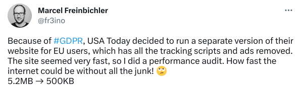
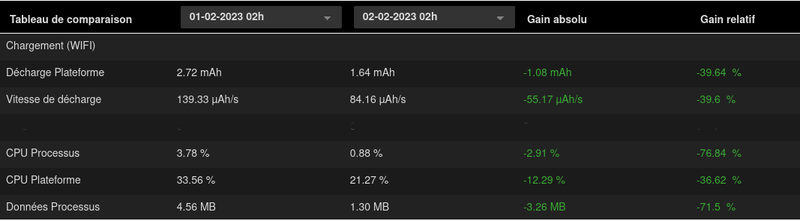
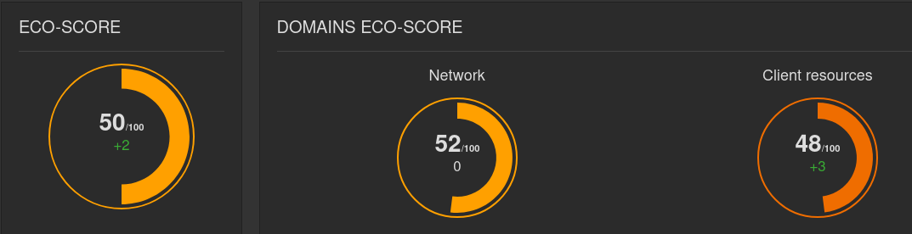
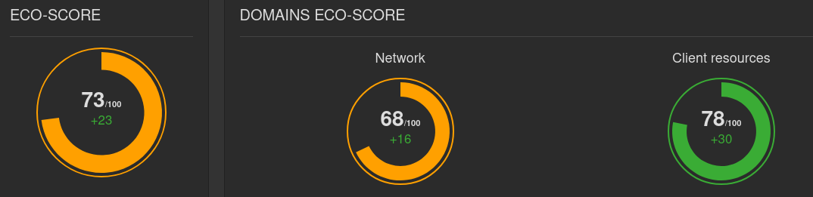

L’article en résumé
Un service tiers c’est quoi ? Ce sont des services qui permettent d’integrer une fonctionnalité ou un contenu complexe via du code dont on a peu de contrôle. Les 10 services tiers les plus fréquents bloquent le chargement des sites pendant environ 1,4s. Les polices google sont le service le + répandu alors même que son utilisation peut contrevenir au RGPD.
Les impacts des services-tiers sont loin d’être négligeables. En termes environnementaux, de performance, de sécurité mais aussi de gestion des données personnelles, de captation de l’attention et parfois même d’accessibilité. Il convient donc d’y avoir recours le moins possible. Ce dernier point est soutenu par les référentiels du RGESN et du GR491.
Les bonnes pratiques pour limiter les services tiers ?
- Votre site est en construction : ne pas inclure de services tiers
- Votre site est déjà construit : limiter l’ajout de contenus ou supprimer certains services tiers ( en vérifiant la compatibilité avec la conception, marketing ou stratégie déjà en place)
- Votre site se chargera plus vite : un bonus pour le numérique responsable ainsi que l’expérience utilisateur.
Un exemple concret :
Lors d’un audit client, il a été décidé de supprimer le fil twitter présents sur plusieurs pages du site.
Résultats :
une amélioration significative des métriques et indicateurs.
En particulier :
- Réduction de la vitesse de décharge de la batterie de 36%
- Réduction de la charge CPU de 76%
- Réduction du volume de données transférées de 68%
Contexte
Les services-tiers sont présents sur 94% des sites web et représenteraient 45% des requêtes effectuées par l’ensemble des sites web. Ces services servent à intégrer une fonctionnalité ou un contenu complexe via du code le plus souvent hébergé sur un autre site, en ayant peu ou pas de contrôle sur celui-ci. Ainsi, il peut s’agir d’une solution d’analytics, d’une vidéo, des contenus d’un réseau social, d’un captcha, de trackers, etc.
En voici une liste (triée par catégories), construite par Patrick Hulce.

Traduction : En raison de RGPD, USA Today a décidé d’exécuter une version distincte de son site web pour les utilisateurs de l’UE (Union Européenne), dans laquelle tous les scripts de suivi et les publicités ont été supprimés. Le site semblait très rapide, j’ai donc fait un audit de performance. À quelle vitesse Internet pourrait être sans tous les déchets ! 🙄
5,2 Mo → 500 Ko
Vous trouverez plus d’informations à leur sujet ainsi que des statistiques sur leur utilisation dans le chapitre Third-parties du Web Almanac : https://almanac.httparchive.org/en/2022/third-parties
Il en ressort notamment que les 10 plus fréquents bloquent en moyenne le chargement des sites pendant 1,4s et que des optimisations techniques restent souvent possibles (minification, compression, chargement différé mais aussi suppression de code JS obsolète). Aussi, la plupart des services tiers les plus utilisés sont liés à Google.

Il est d’ailleurs intéressant de noter que les polices Google sont le service le plus répandu, alors même que leur utilisation peut contrevenir au RGPD. Une façon d’y remédier est d’héberger soi-même les fichiers correspondants. Le mieux reste bien sûr de s’en tenir le plus possible aux polices système disponibles sans requête supplémentaire.
Il ressort de tout ceci que les impacts des services-tiers, en particulier sur les sites web mais aussi les applications mobiles, sont loin d’être négligeables. En termes environnementaux, de performance, de sécurité mais aussi de gestion des données personnelles, de captation de l’attention et parfois même d’accessibilité (voir à ce sujet l’article de Temesis : https://www.temesis.com/blog/contenus-tiers-exemptes-deroges-audites/). Il convient donc d’y avoir recours le moins possible.
Chez Greenspector, c’est quelque chose que nous regardons de très près pour nos clients, via des outils spécifiques permettant de lister les services tiers et d’estimer leurs impacts respectifs. C’est d’ailleurs là une valeur ajoutée non-négligeable de la mesure. Et une étape incontournable pour réduire les impacts environnementaux et améliorer l’expérience utilisateur.
Intéressons-nous aujourd’hui à la bonne pratique de sobriété qui consiste à intégrer le moins possible de services-tiers dans un service numérique.
Référentiels existants
On retrouve ce critère dans la famille Spécifications du RGESN (Référentiel Général d’écoconception de services numériques) : 2.5 – Le service numérique a-t-il pris en compte les impacts environnementaux des services tiers utilisés lors de leur sélection ?
On le retrouve également dans le GR491 (Guide de référence de conception responsable de services numériques) : Est-ce que les services tiers (fils réseaux sociaux, social wall, carrousels, google maps etc) ne sont pas utilisés par facilité pour pallier le manque de ressources de production de contenus ?
Bonne pratique
Objectif
Cette bonne pratique de sobriété consiste donc à limiter le nombre de services-tiers dans un service numérique.
Quand ?
Elle intervient dès la conception du service (choisir de ne pas inclure les services en question) mais aussi lors de l’ajout de contenu (afin par exemple de ne pas intégrer directement une vidéo Youtube dans un article).
Facilité de mise en œuvre
Il est facile techniquement de supprimer un service-tiers. En revanche, cette suppression peut nécessiter en amont des discussions sur la conception, le marketing ou la stratégie. C’est d’ailleurs pour cela que cette décision doit intervenir le plus tôt possible dans le projet.
Gains estimés
Les gains peuvent être conséquents sur plusieurs domaines liés au Numérique Responsable. Dans tous les cas, l’expérience utilisateur en bénéficie.
Cas d’étude
Lors de l’accompagnement d’un client (audit initial puis mesures quotidiennes et expertise), il a été décidé de supprimer le fil Twitter présent sur plusieurs pages du site. La modification a eu lieu le 1er février 2023. Les mesures sur la page d’accueil mettent en avant les gains liés à cette modification, constats que l’on observe par la mesure des consommations de ressources IT et d’énergie via l’outil Greenspector.

Evolution des métriques liées au chargement de la page entre le 1er et le 2 février 2023

Ecoscore (benchmark web) du 1er février 2023

Ecoscore (benchmark web) du 2 février 2023
On constate donc ici une amélioration significative des métriques et indicateurs. En particulier :
- Réduction de la vitesse de décharge de la batterie de 36%
- Réduction de la charge CPU de 76%
- Réduction du volume de données transférées de 68%
Suite à la projection environnementale via la méthodologie Greenspector, on constate que l’impact de cette page d’accueil était, avant suppression du fil Twitter, de 0.95g eqCO2. Après suppression de ce fil, il est de 0.54g eqCO2.
La page en question a plus de 2,5 millions de vues par an.
Dans un souci de simplification, on laisse de côté ici les apports du cache côté client (même s’ils sont sûrement non-négligeables), les disparités de temps passé par chacun sur cette page, ainsi que les modifications apportées à celle-ci sur ce laps de temps.
On passe alors d’un impact sur un an de 2,38T eqCO2 à 1,36T eqCO2, soit une réduction de plus de 40% de l’impact en termes d’émissions de gaz à effet de serre.
Pour les autres impacts évalués, la tendance est similaire. Ainsi, sur un an, on passe de 383047 à 224675 L d’eau consommée et de 383 à 230 m² d’occupation des sols.
Aller plus loin
Pour les services-tiers jugés indispensables, il existe des méthodes pour en réduire l’impact (via des bonnes pratiques d’efficience). Il peut notamment s’agir d’avoir recours à une façade pour intégrer une carte interactive ou une vidéo sous la forme d’une vignette cliquable.
Certains articles abordent le sujet sous l’angle de la performance web :
- Reducing the Site-Speed Impact of Third-Party Tags, par Andy Davies [article en anglais] : améliorer la performance via la gestion des tags.
- How to Find the Third-Parties on Your Site, par Simon Hearne [article en anglais] : présentation de l’outil RequestMap, intégré dans Webpagetest pour détecter les services-tiers. Cet outil avait déjà été abordé sur le blog de Greenspector dans le cas d’une application Android.
- Identifying, Auditing, and Discussing Third Parties, par Harry Roberts [article en anglais] : comment auditer les services-tiers d’un site
- Reducing The Web’s Carbon Footprint: Optimizing Social Media Embeds, par Michelle Baker [article en anglais] : comment intégrer les contenus de réseaux sociaux de façon efficiente.
- Partytown [article en anglais] : une librairie qui propose de gérer les services-tiers via un WebWorker
- Are my third parties green, par Fershad Irani [article en anglais] : un outil en ligne pour évaluer l’impact environnemental des services-tiers via la provenance de l’électricité alimentant les serveurs.